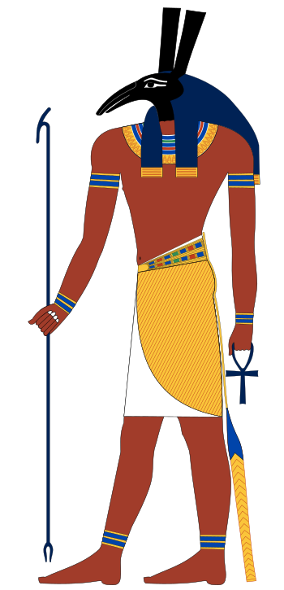

Sutech, známý také jako Set nebo Seth, byl v egyptské mytologii mocným a často obávaným bohem pouště, moře a bouří. Byl bratrem Usira, boha plodnosti a úrody. Zatímco Usir vládl nad zelenými poli a úrodou, Sutechova říše zahrnovala neúrodné pouště a chaos. Kromě toho byl také bohem války a temnoty. Přestože měl pověst boha chaosu, byl Sutech zároveň ochráncem Horního Egypta a v nejstarších dobách ho Egypťané uctívali jako vítěze nad hadem Apopem a spojence slunečního boha Re.
Sutech bývá zobrazován jako štíhlý muž v bederní roušce s hlavou svého tajemného posvátného zvířete, které dodnes nebylo jednoznačně identifikováno. Vědci se domnívají, že to mohl být pes hyenovitý, zvíře, které lovilo ve smečkách a mělo pověst krutého lovce, což dobře odpovídá Sutechovu charakteru. Tento bůh byl nejen bohem chaosu a bouří, ale také statečným obráncem, který chránil Egypt před nebezpečími a zlem. Jeho složitá povaha z něj činí jednoho z nejzajímavějších bohů starověkého Egypta.